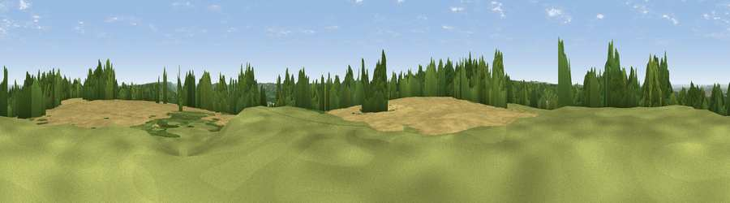

Viewpoint near Knockholt
#30658 in England · top 18% of its area beats it · near KnockholtWhere it is
The exact computed spot (TQ 46525 57275). Click the marker for map links.
The view, rendered

A 360° render of this exact spot computed from the terrain model, tree cover and land cover — summer colours, afternoon light, calibrated against photographs of famous viewpoints. Real trees, hedges and buildings will differ in detail.
The panorama
Grey silhouette: terrain skyline in each direction (720 bearings, Earth curvature and refraction included). Dashed green: skyline with trees (+15 m) and buildings (+8 m) as obstacles. Blue strip: how far the ground is visible on each bearing.
Where the view opens
Wedge length = distance to the farthest visible ground on that bearing (vegetation-aware). Rings at 10, 25 and 50 km.
What fills the view
40% cropland · 34% woodland · 24% grassland · 2% built-up
Angular shares of the visible panorama (visual magnitude), not map area. Landscape diversity 0.50 (0–1 Shannon).
Key numbers
More beautiful places nearby
The staircase of upgrades: each row has a higher view potential than everything closer. Driving times are estimates from straight-line distance, calibrated against real road routing — check an actual route before setting out.
| Place | Direction | Drive | Score |
|---|---|---|---|
| Viewpoint near Brasted | SW · 1 km | ~3 min | 42.6 |
| Viewpoint near Westerham | WSW · 3 km | ~7 min | 43.5 |
| Viewpoint near French Street | S · 6 km | ~13 min | 64.5 |
| Viewpoint near Shipbourne | ESE · 11 km | ~21 min | 66.2 |
| Viewpoint near Lower Kingswood | W · 23 km | ~38 min | 67.7 |
| Viewpoint near Coldharbour | WSW · 35 km | ~53 min | 70.0 |
| Viewpoint near Plumpton | SSW · 46 km | ~66 min | 80.4 |
| Viewpoint near Westmeston | SSW · 46 km | ~66 min | 80.9 |
51.29576, 0.10020 · source: screening · position refined by local search. Computed location — check access rights before visiting.